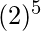

Prerequisite – Relational Model Introduction and Codd Rules
Any subset of attributes of a table that can uniquely identify all the tuples of that table is known as a Super key. Its different from the primary and candidate keys in the sense that only the minimal super keys are the candidate/primary keys.
This means that from a super key when we remove all the attributes that are unnecessary for its uniqueness, only then it becomes a primary/candidate key. So, in essence all primary/candidate keys are super keys but not all super keys are primary/candidate keys. By the formal definition of a Relation(Table) we know that the tuples of a relation are all unique. So the set of all attributes itself is a super key.
Counting the possible number of super keys for a table is a common question for GATE. The examples below will demonstrate all possible types of questions on this topic.
- Example-1 : Let a Relation R have attributes {a1,a2,a3} & a1 is the candidate key. Then how many super keys are possible?
Here, any superset of a1 is the super key.
Super keys are = {a1, a1 a2, a1 a3, a1 a2 a3}
Thus we see that 4 Super keys are possible in this case.
In general, if we have ‘N’ attributes with one candidate key then the number of possible super keys are 2^(N-1).
- Example-2 : Let a Relation R have attributes {a1, a2, a3,…,an}. Find Super key of R.
Maximum Super keys = 2^{n} – 1.
If each attribute of relation is candidate key. - Example-3 : Let a Relation R have attributes {a1, a2, a3,…,an} and the candidate key is “a1 a2 a3” then the possible number of super keys?
Following the previous formula we have 3 attributes instead of one. So, here the number of possible super keys are 2^(N-3).
- Example-4 : Let a Relation R have attributes {a1, a2, a3,…,an} and the candidate keys are “a1”, “a2” then the possible number of super keys?
This problem now is slightly different since we now have two different candidate keys instead of only one. Tackling problems like these is shown in the diagram below:

→ |A1 ∪ A2| = |A1| + |A2| – |A1 ∩ A2|
= (superkeys possible with candidate key A1) + (superkeys possible with candidate key A2)
– (common superkeys from both A1 and A2)= 2^{n-1} + 2^{n-1} – 2^{n-2}
- Example-5 : Let a Relation R have attributes {a1, a2, a3,…,an} and the candidate keys are “a1”, “a2 a3” then the possible number of super keys?
Super keys of(a1) + Super keys of(a2 a3) – Super keys of(a1 a2 a3)
=> 2^(n – 1) + 2^(n – 2) – 2^(n – 3) - Example-6 : Let a Relation R have attributes {a1, a2, a3,…,an} and the candidate keys are “a1 a2”, “a3 a4” then the possible number of super keys?
Super keys of(a1 a2) + Super keys of(a3 a4) – Super keys of(a1 a2 a3 a4)
=> 2^(n – 2) + 2^(n – 2) – 2^(n – 4) - Example-7 : Let a Relation R have attributes {a1, a2, a3,…,an} and the candidate keys are “a1 a2”, “a1 a3” then the possible number of super keys?
Super keys of(a1 a2) + Super keys of(a1 a3) – Super keys of(a1 a2 a3)
=> 2^(n – 2) + 2^(n – 2) – 2^(n – 3) - Example-8 : Let a Relation R have attributes {a1, a2, a3,…,an} and the candidate keys are “a1”, “a2”, “a3” then the possible number of super keys?
In this question we have 3 different candidate keys. Tackling problems like these is shown in the diagram below.

→ |A1 ∪ A2 ∪ A3| = |A1| + |A2| + |A1| – |A1 ∩ A2| – |A1 ∩ A3| – |A2 ∩ A3| + |A1 ∩ A2 ∩ A3|
= (superkeys possible with candidate key A1) + (superkeys possible with candidate key A2) + (superkeys possible with candidate key A3) – (common superkeys from both A1 and A2) – (common superkeys from both A1 and A3) – (common superkeys from both A2 and A3) + (common superkeys from both A1, A2 and A3)
= 2^{n-1} + 2^{n-1} + 2^{n-1} – 2^{n-2} – 2^{n-2} – 2^{n-2} + 2^{n-3}
-
Example-9 : A relation R(A, B, C, D, E, F, G, H)and set of functional dependencies are
CH->G,
A->BC,
B->CFH,
E->A,
F->EG
Then how many possible super keys are present ?Step 1:-First of all we have to find what the candidate keys are :-
as we can see in given functional dependency D is missing but in relation D is given so D must be a prime attribute of Candidate key. =
= =
= =
= = all attributes of a relation except D
= all attributes of a relation except D
so Ck’s are = AD,BD,ED,FDStep 2:-Find superkeys due to single candidate key
there is a two possibility of attribute either we select or not hence there will be 2 chances so,
A_ _D_ _ _ _ = _ B_ D_ _ _ _ = _ _ _ DE _ _ _ =_ _ _ D_F_ _=
Step 3:-Find superkeys due to combination of two CK’s
so,
n(AD ∩ BD)=n(AD ∩ ED)=n(AD ∩ FD)=n(BD ∩ ED)=n(BD ∩ FD)=n(ED ∩ FD) = Step 4:-Find supekeys due to combination of three CK’s
so,
n(AD ∩ BD ∩ ED)=n(AD ∩ ED ∩ FD)=n(ED ∩ BD ∩ FD)=n(BD ∩ FD ∩ AD)=
Step 5:-Find superkeys due to all so,
n(AD ∩ BD ∩ ED ∩ FD)=AB_DEF_ _ =
so according to inclusion- exclusion principle :-
|W∪X∪Y∪Z|=|W|+|X|+|Y|+|Z|-|W∩X|-|W∩Y|-|W∩Z|-|X∩Y|-|X∩Z|-|Y∩Z|+|W∩X∩Y|+|W∩X∩Z|+|W∩Y∩Z|+|X∩Y∩Z|-|W∩X∩Y∩Z|#Supekeys = 4*(
)-(6*)+4*()- = 120So number of superkeys are 120. This explanation is contributed by YaduvanshiRishi.